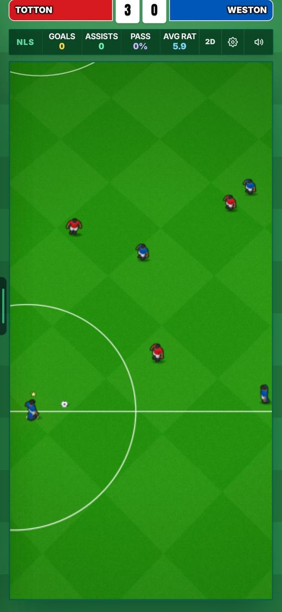
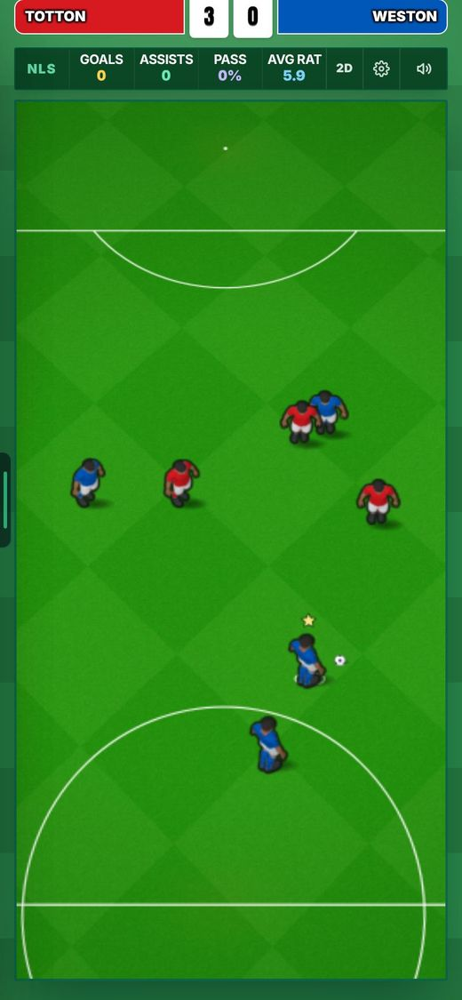
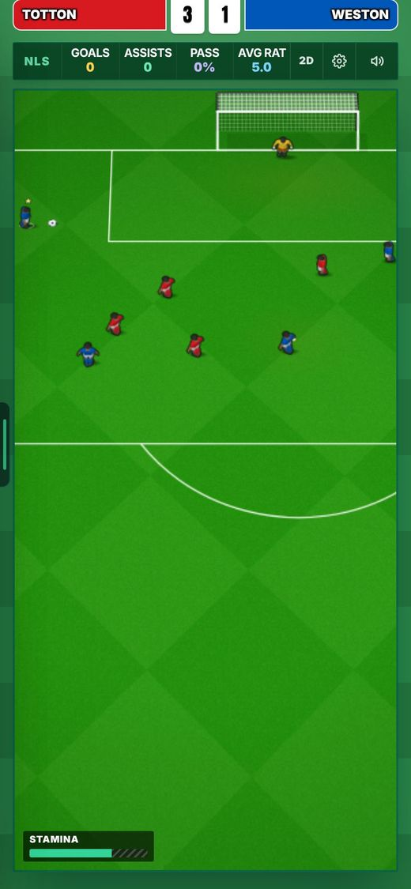
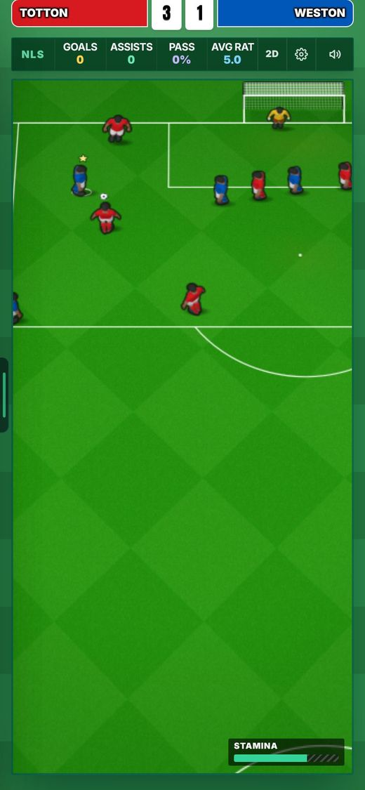
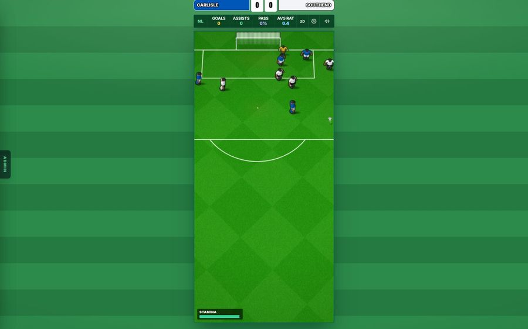
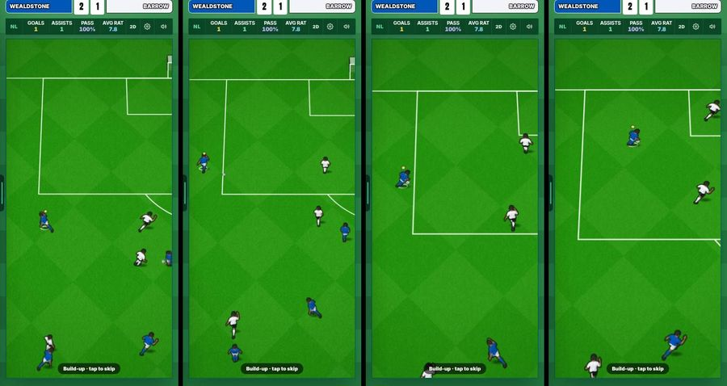
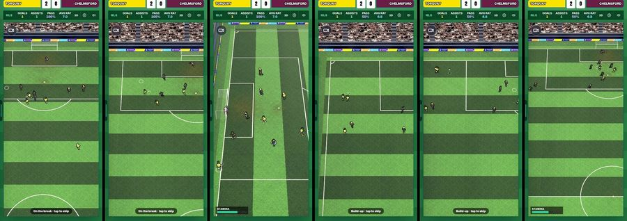
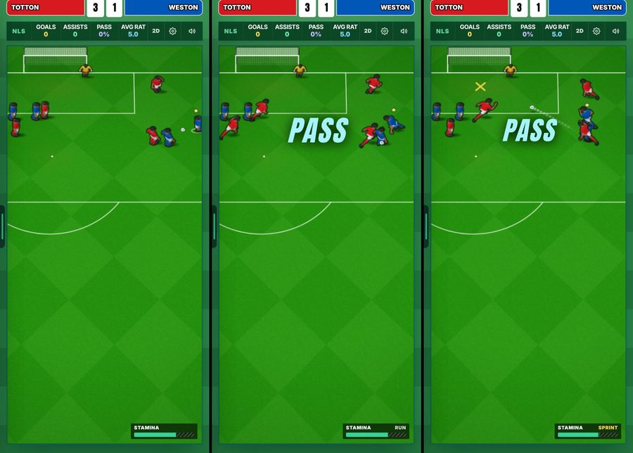
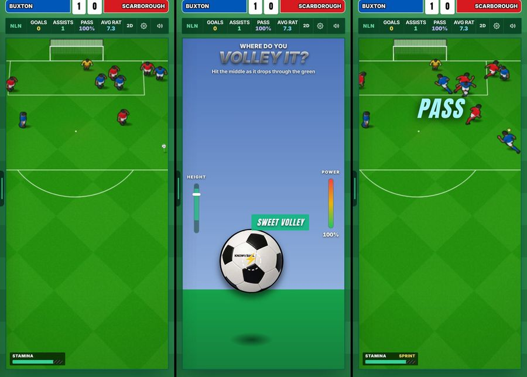
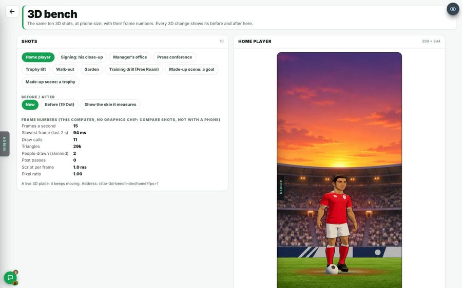

Live: merged to main (a7f79f74).
21 Oct 2026. Round B20: match look and build-ups. In Admin → Patch notes this is v0.103h.
Players looked small in the match pictures (25 px on a phone).
Two shrinks (NEW_FIGURE_SCALE and NEW_OUTFIELD_SHRINK, both 0.8) made men 0.64 of their full size.
Both are now 1. Men are 1.5625 times bigger, the keeper 1.25 times (he is now 0.82 of a man). The ball keeps its size. One set of numbers, so the match, Infinite Highlights, Infinite Match, the Play Area and the gallery all change together. The pitch size is unchanged (366 x 744 on a phone, 384 x 800 on a computer).





Build-ups before a chance were long: 32.2 seconds a match.
The whole move played, up to 10 seconds, and 92% of chances had one.
The move is made whole, then only its last 5 seconds play (6.5 at the biggest moment), never under 4. It ends on exactly the same frame as before (0 m difference in the test). A start inside a pass moves to that pass. A called offside keeps its offside pass in view. Tap to skip is unchanged. Long shots get a build-up 60% of the time, tight angles 75%, every other open-play kind 100% (the same answer every time). Infinite Highlights' one picture always gets one. 1,192 chances in 221 matches, same method as the report.

The camera zoomed suddenly in 7.8% of build-ups and panned fast in 1.1%.
Slower zoom spring, a cap on pan speed (1.2 frame widths a second), and a gentle widen only around a pass longer than the frame, eased in and out and back to normal before the glide onto the chance. 700 chances, phone canvas, 30 fps samples. The hand-over to the chance is still 0.00 px.
In Match view 3D, a build-up ran in slow motion on a slow phone.
The build-up clock was clamped to 0.05 s a frame, so under 20 frames a second it fell behind.
The build-up replay clock now uses real time up to 0.25 s a frame. The match's own steps keep their clamp. One headless run: 5 build-ups played in 3D and each handed over to the chance, 0 console errors. On this machine (about 1 frame a second, software 3D) a 5.8 s build-up took 19 to 33 s, against 88 s before. At 4 frames a second or more it is real time; a phone at 10 fps should take 6.5 s, was about 13 s (reasoned, no phone tested).

When you passed, your player ran after the ball while it was being kicked.
At the pass the game snapped you from your spot (beside the ball) onto the ball, a 1.4 to 1.6 m jump, and Auto run started the same frame, sliding you during the kick pose.
No snap: you stay on your spot, as on a shot. The run waits while the kick pose plays. Phone, 3 passes after the fix: jump at the kick 0.00 m (was 1.39 to 1.60), moved in the first 0.25 s 0.00 m, then the run goes (about 3.6 m by 1 s).


In a match you did not play, a player with weak power and technique could still be given corners.
The simulation now uses the same corner rule as the live match, on its own power and technique (boots counted). 300 simmed league matches each: power plus technique 50 (best corner 31.6 m of 34.4 m, short): corners to you 0.11 to 0.00 a match. At 70 (37.7 m, reaches): 0.11 to 0.11. Chances a match 5.37 to 5.28 (weak), 5.44 to 5.44.
The preview frame on /star-3d-bench-dev stayed empty.
The site told browsers never to show its pages in a frame (X-Frame-Options DENY), including its own.
Now SAMEORIGIN: the site's own pages can be framed, other sites still cannot frame it.

Bigger men overlap more often. The size sheet gave 0.75 overlapping pairs a picture, 41% of pictures with one (before: 0.16, 11%).
Not re-measured after the change. One overlapping header is visible in the stills. Not changed.
The first 3D build-up of a run showed a far, foggy stadium view, then cut to the chance.
It looks like the 3D view's first-picture warm-up. Not checked further.
match2dCam fails 1 of 555 checks (372x704: ball at least a full-power drag above the bottom).
It fails the same with the old sizes, so it was failing before this round.
3D frame rates on a real phone were not tested.
The real-time claim there is reasoned from this machine's numbers.